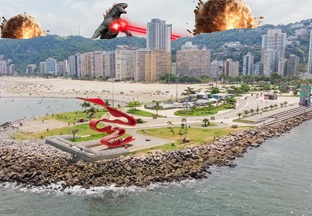

E as cidades que ela tem
A Baixada Santista é uma região metropolitana localizada no litoral do Estado de São Paulo e abrange 9 cidades:
desde Bertioga, mais ao norte, passando por Guarujá, Santos, São Vicente, Cubatão, Praia Grande, Itanhaém e Mongaguá, até chegar em Peruíbe, ponto mais ao Sul.

foi criada mediante Lei Complementar Estadual 815, em 30 de julho de 1996, tornando-se a primeira região metropolitana brasileira sem status de capital estadual.